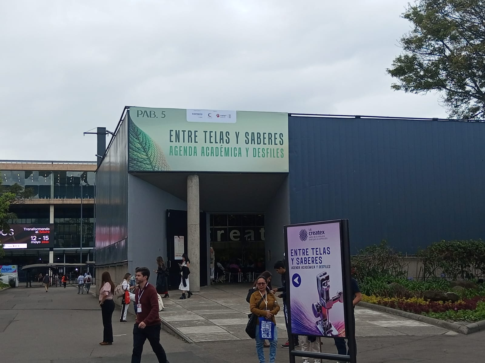

Foto 01

🔍 Ver en grandePabellón 5 · Escenario principal
El momento en que vi el logo de Createx
Apenas entré al Pabellón 5 me encontré con esto: el letrero blanco de "createx" sobre un muro completamente cubierto de vegetación verde. Al fondo, cientos de personas reunidas alrededor de un escenario blanco donde se presentaba una colección de moda.
El contraste entre el verde natural, la iluminación cálida y el negro del techo industrial creaba una atmósfera que no parecía una feria, sino un set de fotografía de alta costura. Sentí que ahí empezaba algo grande.
"Esta es la imagen que resume todo Createx 2026 para mí: naturaleza, diseño
y tecnología en un solo lugar."